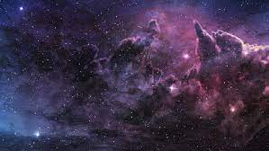

The Universe is everything we can touch, feel, sense, measure or detect. It includes living things,
planets, stars, galaxies, dust clouds, light, and even time. Before the birth of the Universe, time,
space and matter did not exist.
The Universe contains billions of galaxies, each containing millions or billions of stars. The space
between the stars and galaxies is largely empty. However, even places far from stars and planets contain
scattered particles of dust or a few hydrogen atoms per cubic centimeter. Space is also filled with
radiation (e.g. light and heat), magnetic fields and high energy particles (e.g. cosmic rays).
The Universe is incredibly huge. It would take a modern jet fighter more than a million years to reach
the nearest star to the Sun. Travelling at the speed of light (300,000 km per second), it would take
100,000 years to cross our Milky Way galaxy alone.
It is also believed that the universe is balanced due to its equal positive and negative energies. The great scientists like Albert Einstein proposed the theory of relativity and Newton was the first to discover gravity and there were many more that dived into the secrets of the universe. It is predicted that there is an end to this universe and that once again the entire energy and matter of our Universe will be concentrated at a single point, which will again mark the beginning of a new universe.
No one knows the exact size of the Universe, because we cannot see the edge – if there is one. All we do
know is that the visible Universe is at least 93 billion light years across. (A light year is the
distance light travels in one year – about 9 trillion km.)

The Universe has not always been the same size. Scientists believe it began in a Big Bang, which took
place nearly 14 billion years ago. Since then, the Universe has been expanding outward at very high
speed. So the area of space we now see is billions of times bigger than it was when the Universe was
very young.
The galaxies are also moving further apart as the space between them expands.
It is also believed that the universe is balanced due to its equal positive and negative energies. The great scientists like Albert Einstein proposed the theory of relativity and Newton was the first to discover gravity and there were many more that dived into the secrets of the universe. It is predicted that there is an end to this universe and that once again the entire energy and matter of our Universe will be concentrated at a single point, which will again mark the beginning of a new universe.